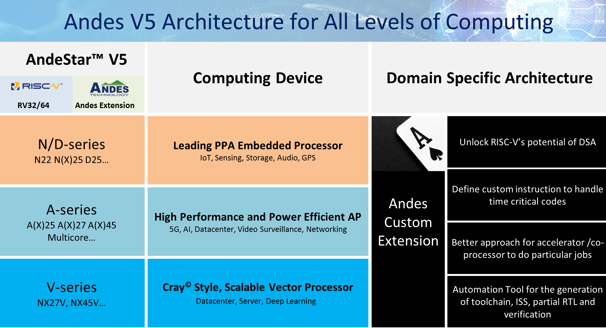

RISC-V¶
RISC-V 第五代精简指令集 开放指令集架构(ISA)， BSD License 开源，2010年始于加州大学伯克利分校。
模块化：RISC-V将不同的部分以模块化的方式组织在一起，并试图通过一套统一的架构来满足各种不同的应用场景，这种模块化是x86与ARM架构所不具备的。
指令数目少：受益于短小精悍的架构以及模块化的特性，RISC-V架构的指令数目非常的简洁。基本的RISC-V指令数目仅有40多条，加上其他的模块化扩展指令也总共只有几十条指令。
Andes¶
Andes D45¶
Qingke¶
WCH 青稞
DMIPS |
RAM |
Flash |
DMIPS |
BLE |
USB |
Ethernet |
|
|---|---|---|---|---|---|---|---|
XuanTie¶
C906¶
E907¶
32 bit
支持 RISC-V RV32IMA[F][D]C[P] 指令集；
支持 RISC-V 32/16 位混编指令集；
支持 RISC-V 机器模式和用户模式；
32 个 32 位整型通用寄存器，32 个 32 位/64 位浮点通用寄存器；
整型 5 级/浮点 7 级，单发射，顺序执行流水线；
支持 AXI4.0 主设备接口以及 AHB5.0 外设接口；
指令 cache，两路组相连结构，2KB-32KB 可配置；
数据 cache，两路组相连结构，2KB-32KB 可配置；
支持非对齐内存访问；
双周期硬件乘法器，基4硬件除法器；
可选配 BHT 和 BTB；
支持平头哥扩展增强指令集；
支持平头哥 MCU 特性扩展技术，包括中断处理加速技术、MCU 扩展特性；
兼容 RISC-V CLIC 中断标准，支持中断嵌套，外部中断源数量最高可配置 240 个；
兼容 RISC-V PMP 内存保护标准，0/4/8/12/16 区域可配置；
支持可配的性能监测单元；
支持 RISC-V Debug 协议标准；
频率 >1.0GHz@T28 HPCPlus, 9T SVT(worst case), Coremark > 3.8 coremark/MHz, Dhrystone >2.0DMIPS/MHz。